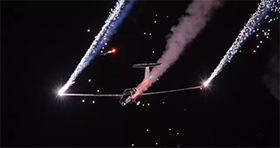
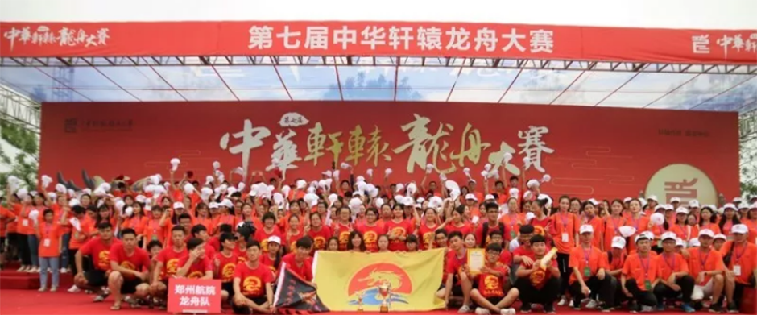

社区服务
综合服务队 航空科普队
综合服务队的工作包括进社区教小孩子做手工， 协助社区进行商铺调查，环保调查，在社区积极打扫卫生， 发一些市民行为准则和法制宣传单，还有摆放共享单车， 将路上的小广告进行了清理等活动。 队伍做的每项工作都会提前与社区联系并确定。
航空科普队主要为宣讲学校特色而建立的， 主要活动为进社区，宣讲航空知识， 以及协助社区的小孩子组装飞机模型， 给孩子们既积极开展有关科普知识， 共同参加科普活动，使孩子们了解更多的科普内容。 进一步宣扬学校特色。
郑州航展
航空盛宴
4月27日上午， 为期5天的2018郑州航展暨世界编队特技 飞行年度颁奖盛典在郑州上街机场隆重开幕。 这次五一小长假，郑州航展不仅准备了冲上云霄、 空中芭蕾、蓝天绘画等特技项目，更有航展美食节， 晚霞飞行音乐秀等你来狂欢。
本次郑州航展，郑州航院一共招募了143名志愿者， 他们分配在现场管理，直播，飞行保障，物料管理， 区宣传推介等岗位，作为当代大学生，他们有素质， 有文化，有担当，他们活跃在航展现场的各个区域， 不论是客服咨询，或是物料管理，亦或是区宣传推介， 他们都在自己的岗位上发挥着作用， 为航展的正常有序进行贡献自己的力量。
轩辕龙舟
百舸争流
“郑航龙舟队”始创于2012年4月， 是由我校学生自发组织成立的大学生龙舟运动竞赛和文化传承组织。 自第三届中华轩辕龙舟大赛开始至今，每年都报名参赛，并取得优异成绩。
第七届中华轩辕龙舟大赛由河南省体育局、 河南省文化厅、河南日报报业集团、郑州市人民政府、 中华炎黄文化研究会、河南省皇帝故里基金会主办， 以弘扬中华优秀文化、推动龙舟运动发展、助推中原经济区建设为宗旨， 以“轩辕作舟，群英争标”为主题， 是我省举办的一次规模大、规格高、群众参与广泛的文化体育盛事。 由于参赛人员多达1000余人，场面隆重, 大赛组委会特邀请我校志愿者参与本次志愿服务工作， 共同将本次大赛举办的更加圆满。
